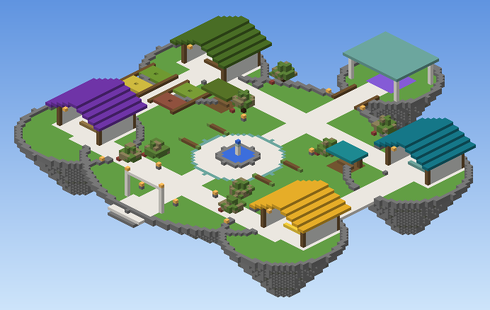
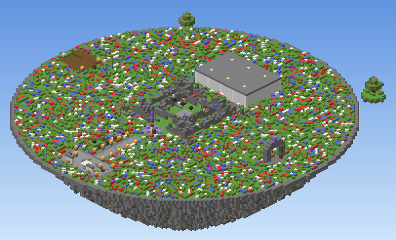
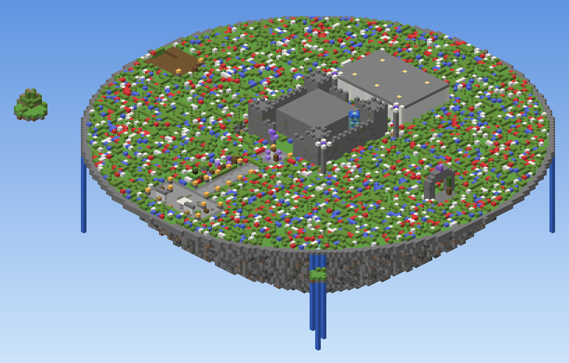
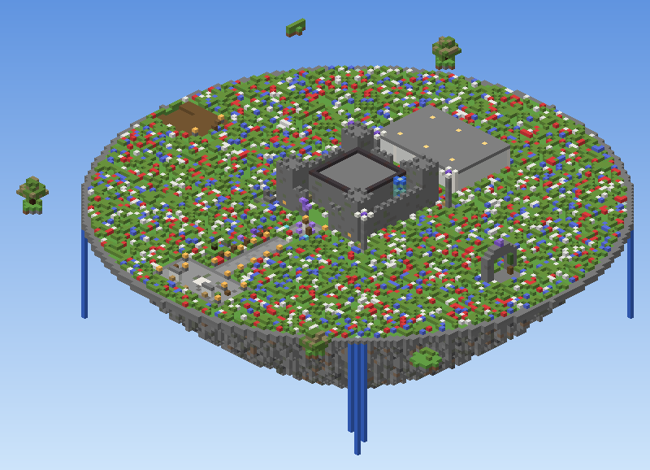
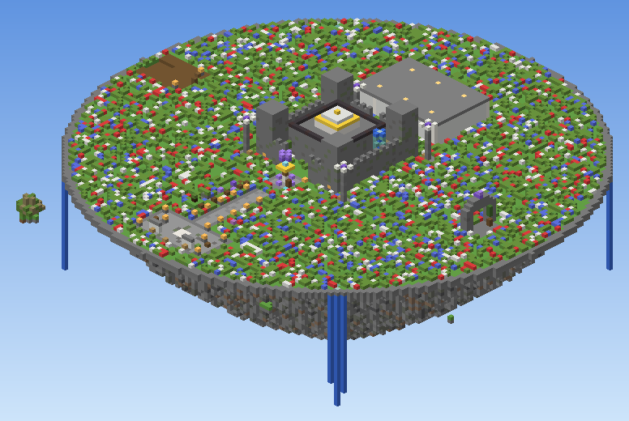

ตลาดพืชผล
รอทดสอบกับผู้เล่น/market · ขายพืชผลจากเกาะเพื่อรับเงินในเกม
| ขาย | จำนวน | ได้รับ |
|---|---|---|
| ข้าวสาลี Wheat | 32 | $32 |
| แครอท Carrot | 32 | $24 |
| มันฝรั่ง Potato | 32 | $24 |
| บีทรูท Beetroot | 32 | $32 |
| ฟักทอง Pumpkin | 8 | $40 |
| แตงโมชิ้น Melon Slice | 32 | $16 |
SkyBlock ที่เล่นเป็นทีม สร้างเกาะลอยฟ้าของทีม ขายผลผลิต ทำภารกิจส่งของ แล้วนำโบราณวัตถุไปฟื้นฟูเมืองโบราณของทีมคุณเอง ทีละบทจนเมืองกลับมาสมบูรณ์
Lost Sky ยังไม่เปิดให้เล่นทั่วไป ตอนนี้ทีมงานทดสอบภายในกับคนใน whitelist ระบบส่วนใหญ่ยังไม่ผ่านการทดสอบเล่นจริง และรายละเอียดอาจเปลี่ยน
ทดสอบ 3 ต.ค. 2026 ด้วยบัญชีเจ้าของเซิร์ฟ 1 บัญชี
/spawn และ /hub พากลับฮับ/menu เปิดเมนูฮับได้/city go วาร์ปไปพื้นที่เมืองของทีมตัวเอง/spawn
ลานกลางที่ทุกคนใช้ร่วมกันและมีระบบป้องกัน ขายพืชผล ซื้อเสบียง และรับภารกิจส่งของรายวัน
/is
เกาะ SkyBlock ที่ทีมสร้างเองได้อิสระ ทำฟาร์ม ปั่นหิน ขยายเกาะ ชวนเพื่อนเข้าทีมได้
/city go
เมืองโบราณที่เป็นของทีมคุณเท่านั้น บริจาคโบราณวัตถุเพื่อซ่อมเมืองทีละบท เมืองถูกป้องกันไว้ ไม่ใช่พื้นที่สร้างอิสระ
ฮับเป็นพื้นที่สาธารณะเดียวของเซิร์ฟ ทุกคนใช้ร่วมกัน และมีระบบป้องกันการทุบหรือวางบล็อก พิมพ์ /spawn เพื่อกลับฮับ หรือ /menu เพื่อเปิดเมนูฮับได้จากทุกที่

/marketตลาดพืชผล (หลังคาสีเขียว) · ขายผลผลิต
/skyshopร้านเสบียง (หลังคาสีฟ้าอมเขียว) · ซื้อวัสดุ
/skyquestsโถงภารกิจ (หลังคาสีม่วง) · ส่งของทุก 24 ชั่วโมง
/topupห้องเติมเงิน (หลังคาสีทอง) · ยังไม่เปิด
/city goศาลาเมืองของทีม · ไปเมืองฟื้นฟูของทีมคุณ
ราคาและรางวัลด้านล่างคือค่าที่ตั้งไว้ในเซิร์ฟ ป้ายบนแต่ละโซนบอกว่าทดสอบอะไรไปแล้วบ้าง ค่าอาจปรับก่อนเปิด หน่วยเงินคือเงินในเกม เมนูร้านค้าในเกมเป็นภาษาอังกฤษ เช่น "Buy 32 Cobblestone"
/market · ขายพืชผลจากเกาะเพื่อรับเงินในเกม
| ขาย | จำนวน | ได้รับ |
|---|---|---|
| ข้าวสาลี Wheat | 32 | $32 |
| แครอท Carrot | 32 | $24 |
| มันฝรั่ง Potato | 32 | $24 |
| บีทรูท Beetroot | 32 | $32 |
| ฟักทอง Pumpkin | 8 | $40 |
| แตงโมชิ้น Melon Slice | 32 | $16 |
/skyshop · ซื้อของที่เกาะใหม่มักขาด ทดสอบแล้วกับการซื้อหินก้อน รายการอื่นยังรอทดสอบ
| ซื้อ | จำนวน | ราคา |
|---|---|---|
| หินก้อน Cobblestone | 32 | $32 |
| ดิน Dirt | 32 | $64 |
| ท่อนไม้โอ๊ก Oak Log | 16 | $96 |
| กระจก Glass | 16 | $64 |
| เมล็ดข้าวสาลี Wheat Seeds | 16 | $16 |
| คบเพลิง Torch | 16 | $24 |
/skyquests · ส่งของตามที่กำหนดเพื่อรับเงินและเศษผลึก ทำซ้ำได้ทุก 24 ชั่วโมง นับแยกต่อผู้เล่นแต่ละคน
เศษผลึกสามัญ (Common Shard) ใช้บริจาคฟื้นฟูเมืองของทีมได้ ดูส่วน โบราณวัตถุ
ทุกทีมบนเกาะ BentoBox มีสองที่แยกกัน ที่หนึ่งสร้างเองได้อิสระ อีกที่เป็นเมืองโบราณที่ซ่อมด้วยโบราณวัตถุ แต่ละทีมมีเมืองของตัวเอง ไม่ได้ใช้เมืองร่วมกับทั้งเซิร์ฟ
/is/is team invite (แผน: สูงสุด 4 คนต่อทีม)/is city หรือ /city เปิดเมนู · /city go วาร์ปไปเมือง/city donate เพื่อซ่อมเมืองทีละบทแต้มโบราณวัตถุที่สมาชิกในทีมบริจาคจะสะสมรวมกันเป็นของทีม เมื่อถึงเป้าหมาย เมืองของทีมจะถูกแทนที่ด้วยเวอร์ชันที่ซ่อมแล้วของบทถัดไป ทีมอื่นไม่ได้รับผลด้วย
ครั้งแรกที่ใช้ /city go ระบบจะเตรียมเมืองบทที่ 1 ให้ทีม หอคอยพังทลาย กองหิน และผลึกอเมทิสต์ที่ยังหรี่แสง
กำแพงชั้นล่างถูกสร้างขึ้นใหม่ รากหินและมอสเกาะตามขอบเกาะ สวนเล็ก ๆ เริ่มกลับมา
น้ำตกไหลจากขอบเกาะลงสู่ทะเลเมฆ และหอคอยที่พันด้วยสายน้ำตั้งขึ้นกลางเมือง
โถงชั้นล่างสว่างด้วยตะเกียงและถ่านไฟ มีรายละเอียดหินดำประดับทอง
เมืองของทีมกลับมาสมบูรณ์ หอคอยสูงตระหง่าน มงกุฎทองบนป้อม และผลึกส่องลำแสงขึ้นฟ้า
ทดสอบแล้ว: /city go พาไปพื้นที่เมืองของทีมตัวเอง (บัญชีเดียว) ยังรอทดสอบ: ทีมหลายคน, การแยกเมืองระหว่างทีม, การบริจาค และการเปลี่ยนบท ส่วนรางวัลอื่นของแต่ละบท (นอกจากหน้าตาเมือง) ยังอยู่ระหว่างออกแบบ
ถือโบราณวัตถุไว้ในมือหลัก แล้วพิมพ์ /city donate แต้มจะเข้าเมืองของทีมคุณ
รางวัลจากภารกิจส่งของรายวัน รอทดสอบ
แหล่งที่มากำลังออกแบบ แผน
แหล่งที่มากำลังออกแบบ แผน
แหล่งที่มากำลังออกแบบ แผน
โบราณวัตถุของจริงจะมีบรรทัด Lost Sky Relic อยู่ใต้ชื่อไอเท็ม ไอเท็มทั่วไปหรือไอเท็มที่แค่เปลี่ยนชื่อด้วยทั่งจะบริจาคไม่ได้
ทุกภาพเป็นภาพเรนเดอร์จากไฟล์แผนที่จริง (ฮับ และเมืองของทีมทั้งห้าบท) ไม่ใช่ภาพถ่ายจากในเกม การตกแต่งแผนที่ยังไม่เสร็จ หน้าตาในเกมอาจเปลี่ยนอีก กดที่ภาพเพื่อเปิดขนาดเต็ม





ไม่ต้องลงม็อด เกมจะโหลดแพ็กฟอนต์ไทยของเซิร์ฟให้เองตอนเข้าเล่น
/menu หรือกลับฮับด้วย /spawn เมนูในเกมเป็นภาษาอังกฤษ/isชวนเพื่อนเข้าทีมด้วย /is team invite/city goทำภารกิจที่ฮับเพื่อรับเศษผลึก แล้วใช้ /city donate ซ่อมเมืองกฎเบื้องต้น อาจเพิ่มเติมก่อนเปิดเซิร์ฟ
ป้ายข้างคำสั่งบอกสถานะล่าสุด คำสั่งที่ยังไม่ผ่านการทดสอบเล่นอาจเปลี่ยน
/spawn/hub/lobby ก็ได้)ทดสอบแล้ว/menu/skyguide/market/skyshop/skyquests/topup/bal/pay <ชื่อผู้เล่น> <จำนวน>/is/is team invite <ชื่อผู้เล่น>/is sethome/is level/is top/city/is city ก็ได้)รอทดสอบ/city go/is city go ก็ได้)ทดสอบแล้ว/city donateตอนนี้ยังไม่มีแพ็กเกจ ราคา หรือช่องทางชำระเงิน โซนเติมเงินในฮับ (/topup) จะแจ้งว่ายังไม่เปิดเช่นกัน
/topup ก่อนเท่านั้นยังไม่มีกำหนด ตอนนี้ทดสอบภายในเฉพาะคนใน whitelist เมื่อพร้อมจะประกาศวันเปิดบนหน้านี้
ยังไม่ประกาศสำหรับผู้เล่นทั่วไป จะแสดงในส่วน "ที่อยู่เซิร์ฟเวอร์" ด้านบนเมื่อเปิดสาธารณะ
ไม่ ทุกทีมมีเมืองของตัวเอง แต้มที่ทีมบริจาคใช้ซ่อมเมืองของทีมนั้นเท่านั้น ทีมอื่นไม่ได้รับผล
ไม่ได้ เมืองถูกป้องกันไว้และเปลี่ยนตามบท สร้างอิสระได้บนเกาะของทีม (/is)
เมืองผูกกับเกาะของทีม ถ้าคุณเข้าร่วมเกาะของทีมอื่น /city go จะพาไปเมืองของทีมใหม่ เมืองของทีมเดิมยังอยู่กับทีมเดิม
แต่ละภารกิจทำได้ 1 ครั้งต่อผู้เล่นทุก 24 ชั่วโมง ระบบนี้ยังรอทดสอบเล่น
อาจเปลี่ยน ราคาตอนนี้เป็นค่าที่กำลังติดตั้ง จะปรับหลังทดสอบเล่น
ยังไม่เปิด ไม่มีการรับชำระเงิน แพ็กเกจ หรือราคาใด ๆ ในตอนนี้ ดูรายละเอียดในส่วน ห้องเติมเงิน
ยังไม่ได้ตัดสินใจ ตอนนี้ทดสอบกับ Java Edition
ไม่ต้อง เซิร์ฟใช้แพ็กฟอนต์ไทย ThaiFontFix ซึ่งเกมจะโหลดให้เองตอนเข้าเล่น แค่กดยอมรับ ม็อดเพิ่มความลื่นหรือ shader ใช้ได้ แต่ห้ามโปรแกรมโกงทุกชนิด
เมนู ร้านค้า และภารกิจในเกมเป็นภาษาอังกฤษ ส่วนเว็บนี้เป็นภาษาไทย ชื่อไอเท็มทั่วไปจะแสดงตามภาษาที่ตั้งในเกมของคุณ
เซิร์ฟบังคับใช้แพ็กฟอนต์ไทย ถ้าเคยกดปฏิเสธไว้ ให้ไปที่ Multiplayer → เลือกเซิร์ฟ → Edit → ตั้ง Server Resource Packs เป็น Enabled หรือ Prompt แล้วเข้าใหม่และกดยอมรับ